Povos de Erath · variantes chibi
Duas variantes por raça geradas pela IA. A de borda dourada foi usada no kit 3D (critério: braços soltos do corpo para o esqueleto). Ver o kit 3D liso leve (5,5 MB) → · liso máximo (13 MB) · versão facetada · teste cartoon (Beorning) · 15 técnicas de deixar leve (Beorning) · Fenna — personagem feita com pipeline de estúdio · Forja de anões · Forja de Erath — os 8 povos em código
Vran
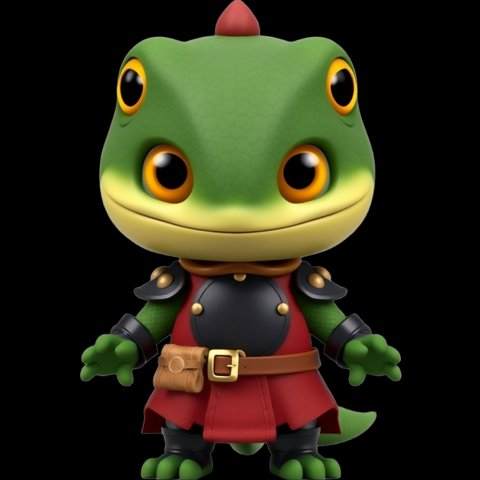
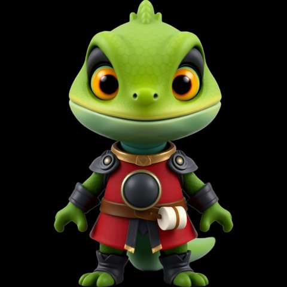
Beorning
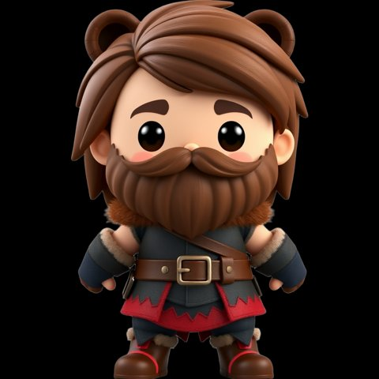
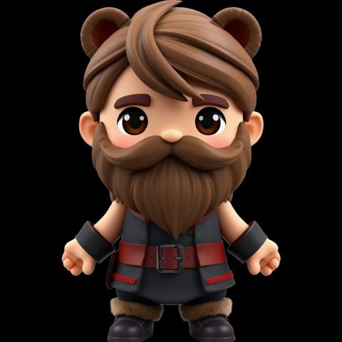
Vodnik
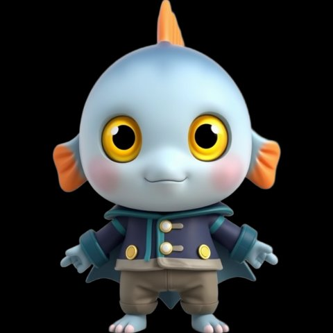
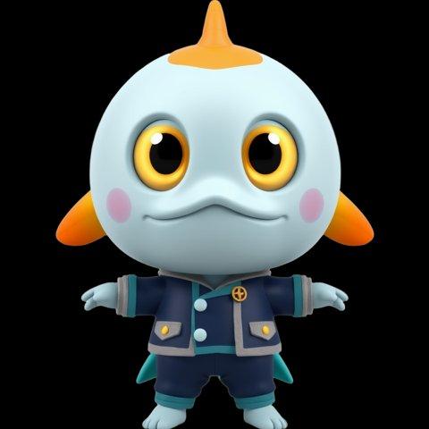
Silvano
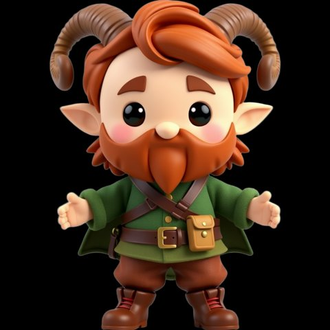
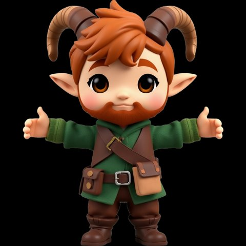
Litomante
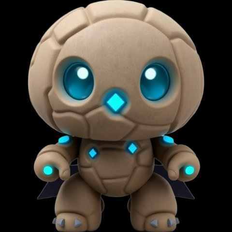
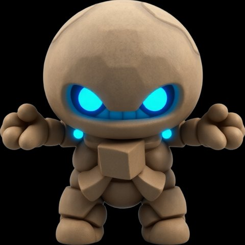
Aetheryn
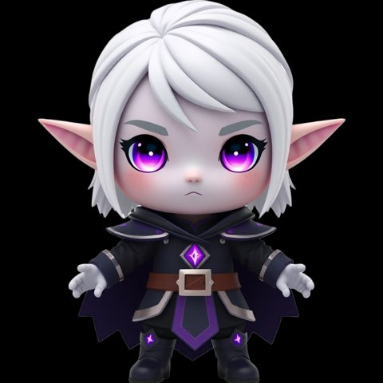
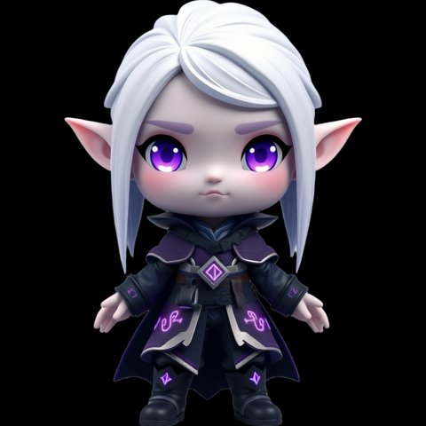
Humano
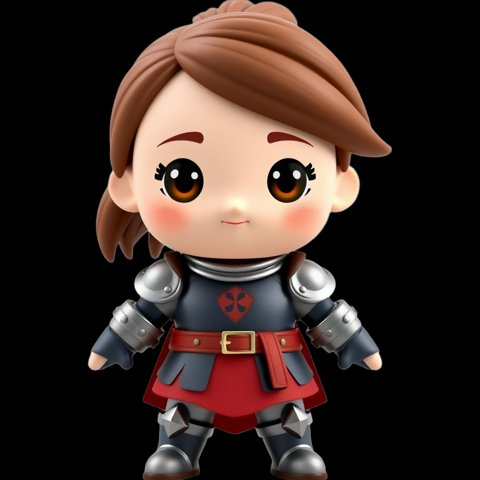
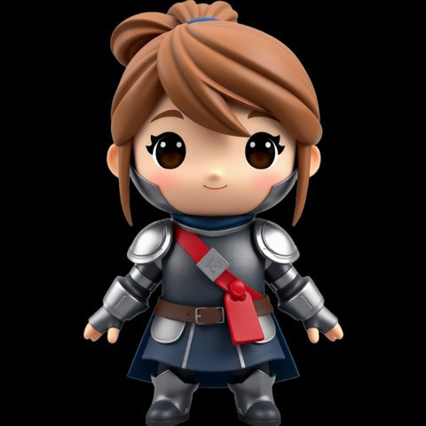